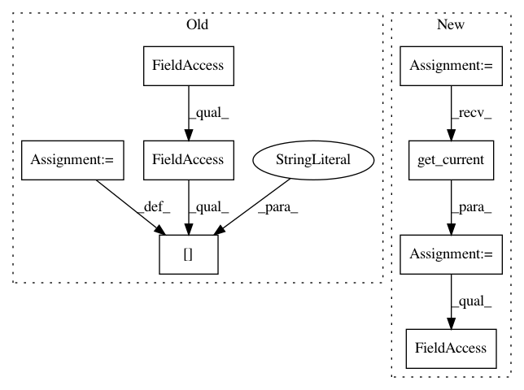

d9e9d8bbddb9986db79047a40194232f1baadf50,debug_toolbar/panels/sql.py,SQLDebugPanel,process_response,#SQLDebugPanel#Any#Any#,137
Before Change
"queries": [q for a, q in self._queries],
"sql_time": self._sql_time,
}
request.debug_toolbar.stats["sql"] = getattr(self, "stats", None)
return response
def content(self):
context = self.context.copy()
After Change
"queries": [q for a, q in self._queries],
"sql_time": self._sql_time,
}
toolbar = DebugToolbarMiddleware.get_current()
toolbar.stats["sql"] = self.stats
def content(self):
context = self.context.copy()
In pattern: SUPERPATTERN
Frequency: 3
Non-data size: 8
Instances
Project Name: jazzband/django-debug-toolbar
Commit Name: d9e9d8bbddb9986db79047a40194232f1baadf50
Time: 2011-09-12
Author: brandon@konkle.us
File Name: debug_toolbar/panels/sql.py
Class Name: SQLDebugPanel
Method Name: process_response
Project Name: jazzband/django-debug-toolbar
Commit Name: 5b4553713775a35634594a65502e5ca8ba58dae9
Time: 2011-09-12
Author: brandon@konkle.us
File Name: debug_toolbar/panels/headers.py
Class Name: HeaderDebugPanel
Method Name: process_response
Project Name: jazzband/django-debug-toolbar
Commit Name: e99c3acd249cc05e1e85ec9a60b5a87685a79f78
Time: 2011-09-12
Author: brandon@konkle.us
File Name: debug_toolbar/panels/version.py
Class Name: VersionDebugPanel
Method Name: process_response